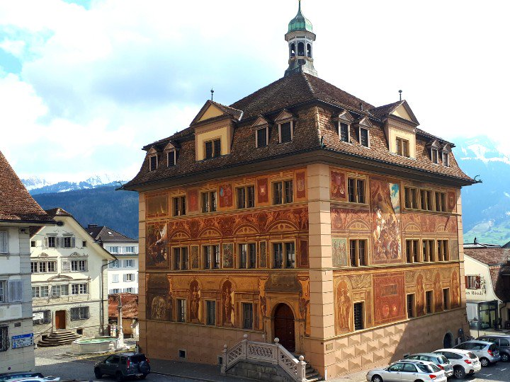
Visiting all 26 county capitals of Switzerland by train.
Nach der Monopoly-Reise vom letzten Jahr www.kalberer.org/monopoly folgt morgen die erste von drei Tagesetappen an alle Kantonshauptorte der Schweiz #swisstour
(Originally on Twitter: Thu Jan 03 18:08:28 +0000 2019)
#swisstour Ostschweiz has started. Goal: visiting all 26 county capitals of Switzerland by train.
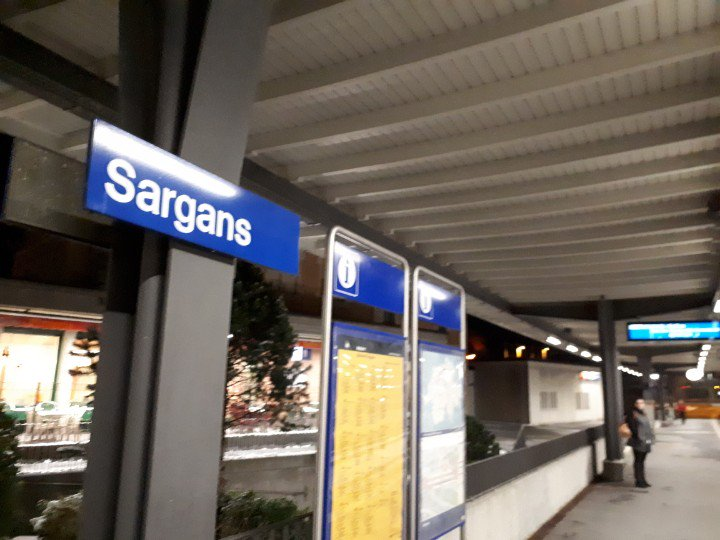
(Originally on Twitter: Fri Jan 04 06:13:21 +0000 2019)
#swisstour 1/26: Appenzell, Kanton Appenzell Innerrhoden www.ai.ch/politik
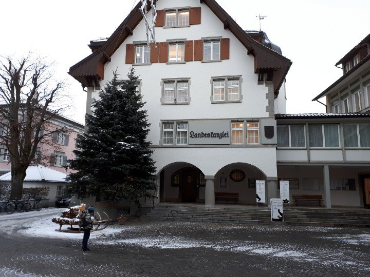
(Originally on Twitter: Fri Jan 04 07:48:01 +0000 2019)
#swisstour 2/26: Regierungsgebäude Herisau, Kanton Appenzell Ausserrhoden www.ar.ch/kantonsrat
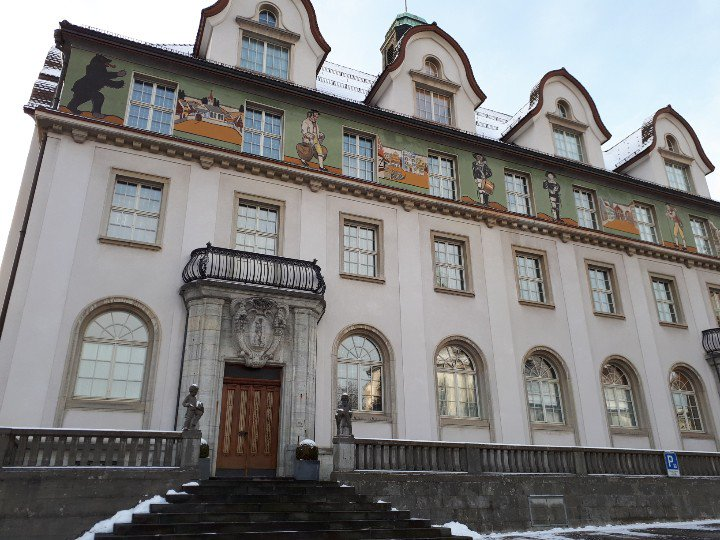
(Originally on Twitter: Fri Jan 04 09:14:58 +0000 2019)
#swisstour 3/26: Rathaus Glarus, Kanton Glarus
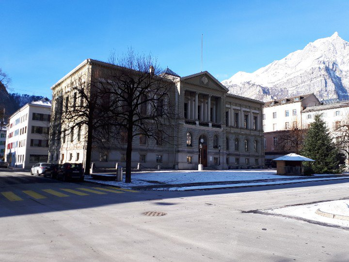
(Originally on Twitter: Fri Jan 04 10:45:26 +0000 2019)
#swisstour 4/26: Rathaus Zürich, Kanton Zürich www.kantonsrat.zh.ch
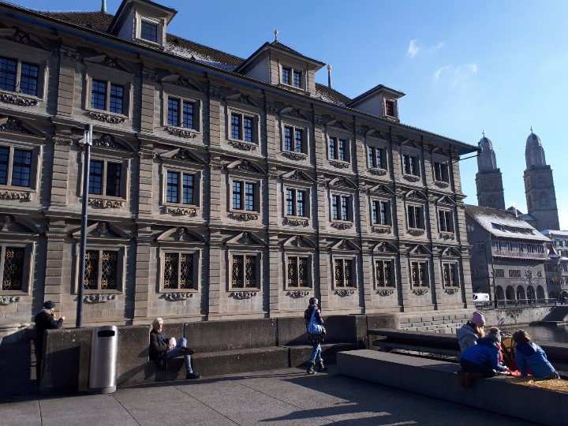
(Originally on Twitter: Fri Jan 04 12:31:19 +0000 2019)
#swisstour 5/26: Rathaus Schaffhausen, Kanton Schaffhausen wikipedia.org
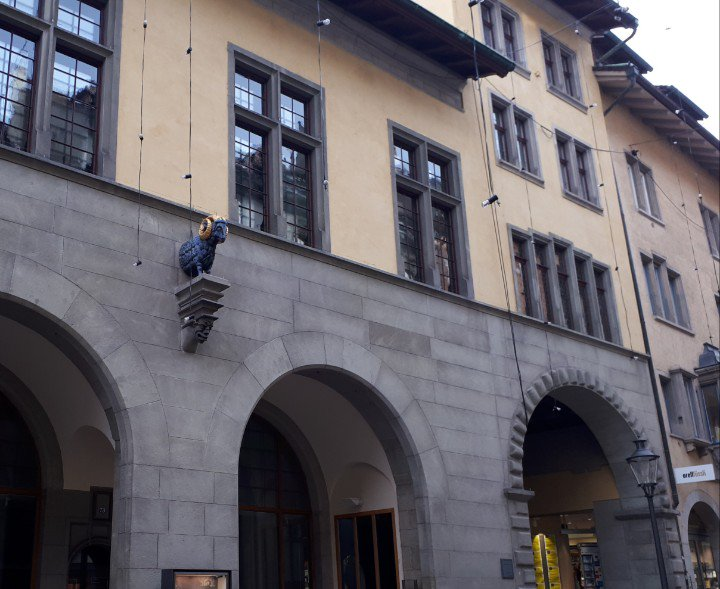
(Originally on Twitter: Fri Jan 04 13:51:41 +0000 2019)
#swisstour 6/26: Rathaus Frauenfeld, Kanton Thurgau wikipedia.org
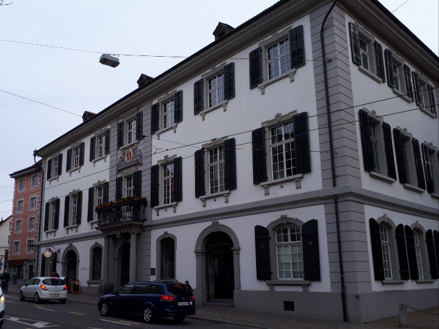
(Originally on Twitter: Fri Jan 04 14:51:40 +0000 2019)
#swisstour 7/26: Kantonsratssaal im Klosterbezirk St. Gallen, Kanton St. Gallen www.sg.ch
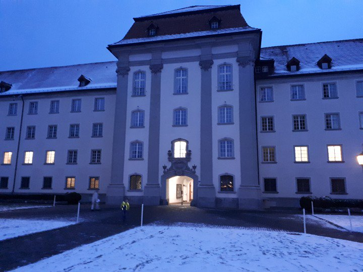
(Originally on Twitter: Fri Jan 04 16:31:30 +0000 2019)
#swisstour 8/26: Grossratsgebäude Chur, Kanton Graubünden. wikipedia.org
Etappe 1 ist geschafft! Etappen 2+3 folgen später.
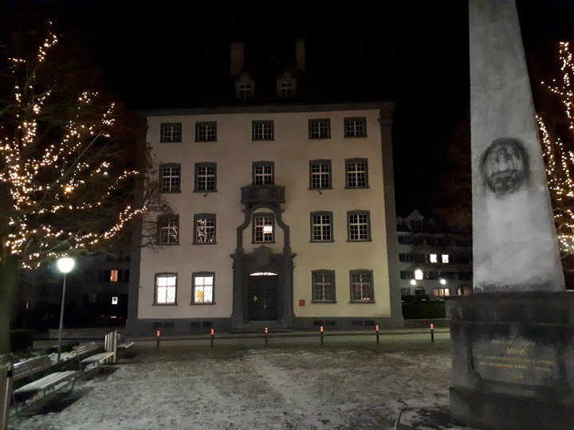
(Originally on Twitter: Fri Jan 04 18:27:06 +0000 2019)
6:28: Start zu Etappe 2+3 der #swisstour - Reise zu allen Kantonshauptorten der Schweiz 🇨🇭 in 3 Tagen.
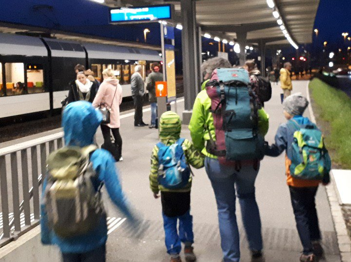
(Originally on Twitter: Mon Apr 08 04:49:17 +0000 2019)
#swisstour 9/26: Rathaus Basel, Kanton Basel Stadt
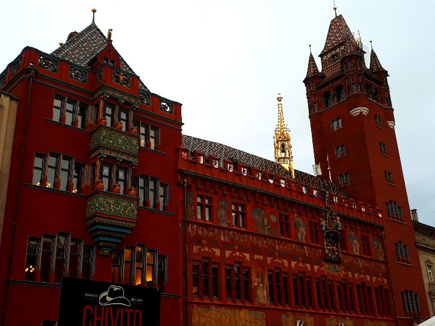
(Originally on Twitter: Mon Apr 08 07:18:38 +0000 2019)
#swisstour 10/26: Parlement Delémont, Kanton Jura
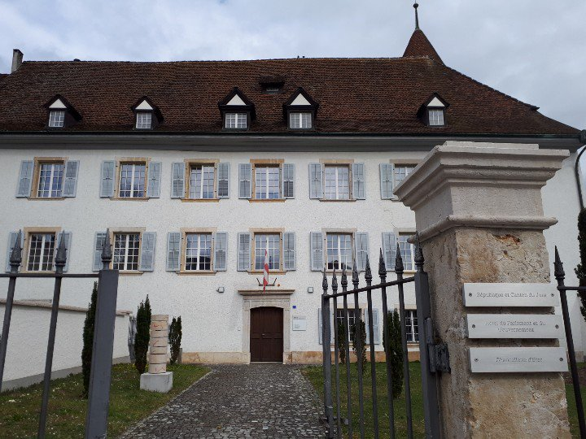
(Originally on Twitter: Mon Apr 08 08:46:40 +0000 2019)
#swisstour 11/26: Rathaus Solothurn, Kanton Solothurn
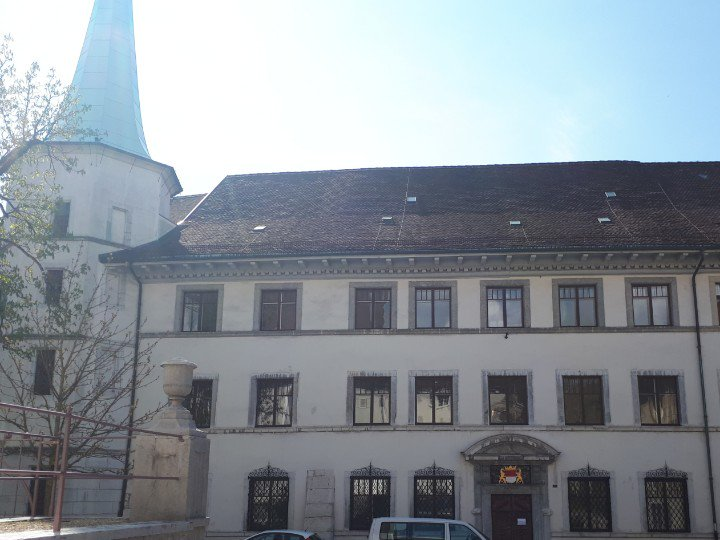
(Originally on Twitter: Mon Apr 08 09:55:58 +0000 2019)
#swisstour 12/26: Château Neuchâtel, Kanton Neuenburg
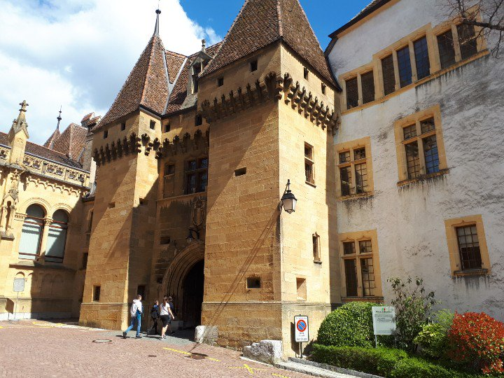
(Originally on Twitter: Mon Apr 08 11:13:54 +0000 2019)
#swisstour 13/26: Grand Conseil Lausanne, Kanton Waadt
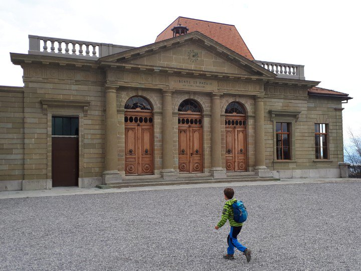
(Originally on Twitter: Mon Apr 08 12:58:50 +0000 2019)
#swisstour 14/26: Hôtel de Ville Genève, Kanton Genf
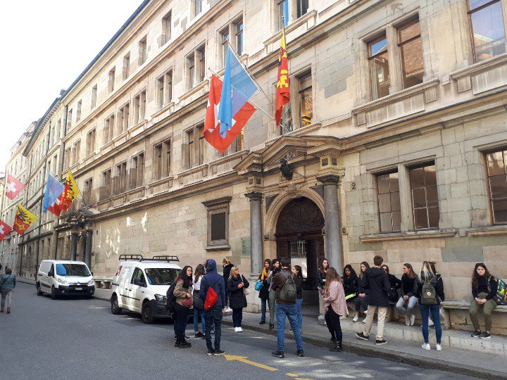
(Originally on Twitter: Mon Apr 08 13:32:13 +0000 2019)
#swisstour 15/26: Grand Conseil Sion, Kanton Wallis
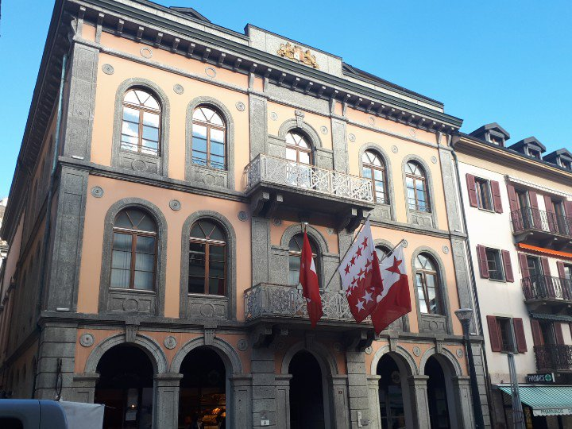
(Originally on Twitter: Mon Apr 08 16:44:12 +0000 2019)
Approaching Lausanne for the 3rd time today. Better prepared to take a picture of Château Chillon from the train this time. #swisstour @foss4g
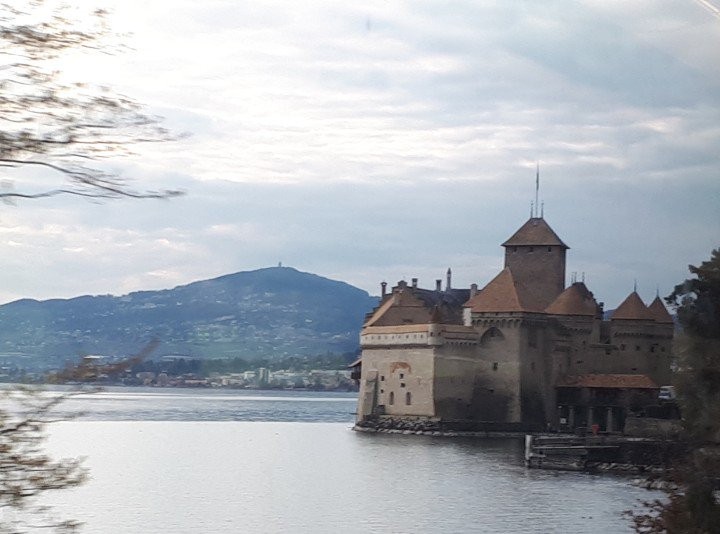
(Originally on Twitter: Mon Apr 08 16:51:09 +0000 2019)
#swisstour 16/26: Grand Conseil Fribourg, Kanton Freiburg
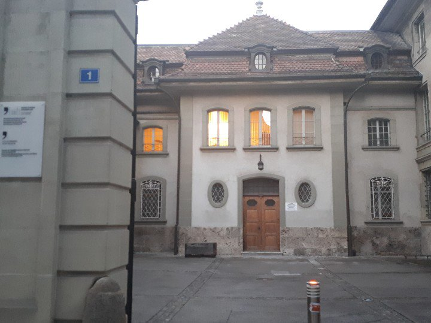
(Originally on Twitter: Mon Apr 08 18:33:35 +0000 2019)
Overnight stay with an appropriate view: the National Parliament in the Swiss capital Bern #swisstour
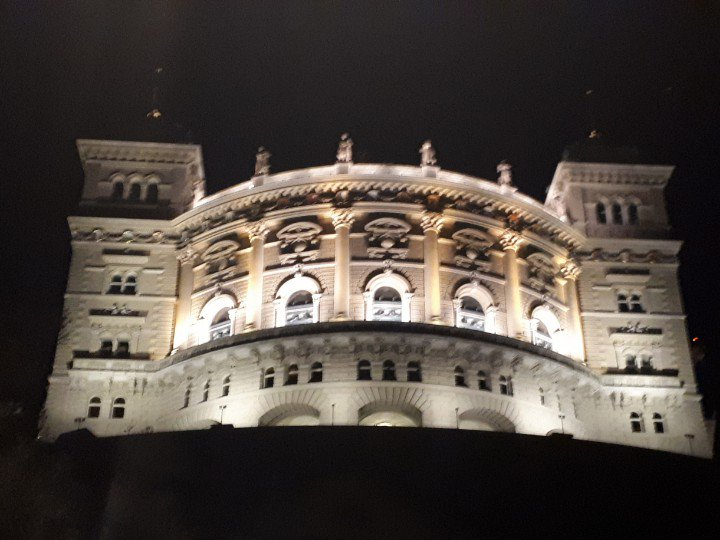
(Originally on Twitter: Mon Apr 08 19:39:15 +0000 2019)
Dritte Etappe #swisstour 17/26: Rathaus Bern, Kanton Bern
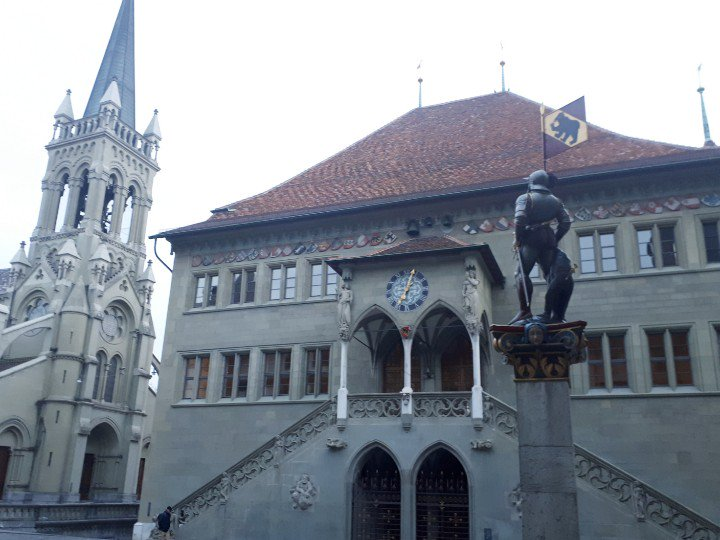
(Originally on Twitter: Tue Apr 09 05:35:41 +0000 2019)
#swisstour 18/26: Regierungsgebäude Liestal, Kanton Basel-Land
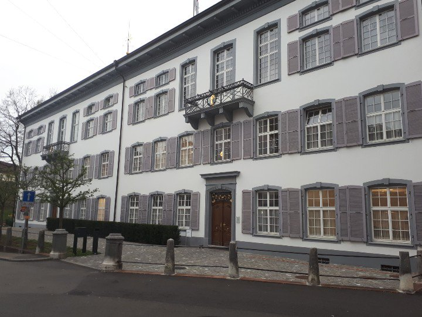
(Originally on Twitter: Tue Apr 09 07:02:15 +0000 2019)
#swisstour 19/26: Grossratsgebäude Aarau, Kanton Aargau
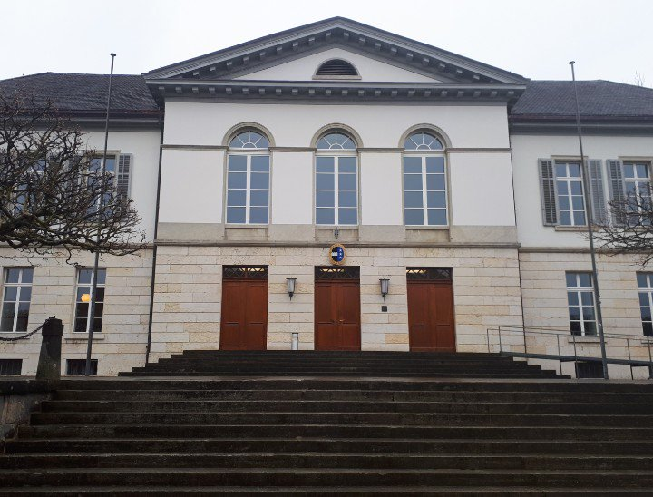
(Originally on Twitter: Tue Apr 09 07:52:32 +0000 2019)
#swisstour 20/26: Regierungsgebäude Luzern, Kanton Luzern
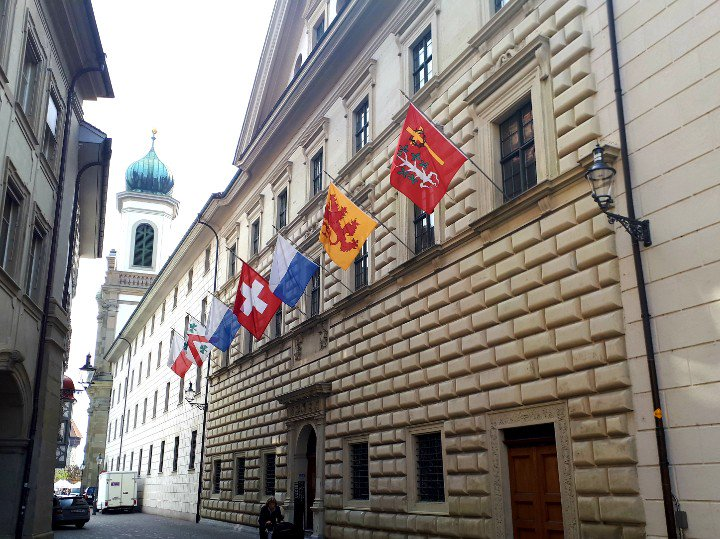
(Originally on Twitter: Tue Apr 09 09:21:34 +0000 2019)
#swisstour 21/26: Rathaus Sarnen, Kanton Obwalden
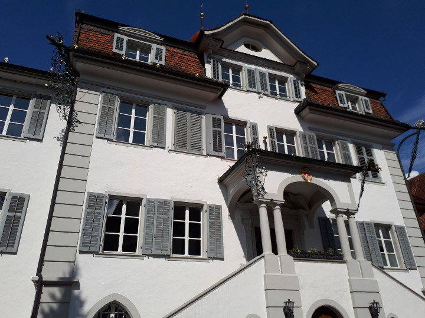
(Originally on Twitter: Tue Apr 09 10:21:05 +0000 2019)
#swisstour 21/26: Rathaus Stans, Kanton Nidwalden
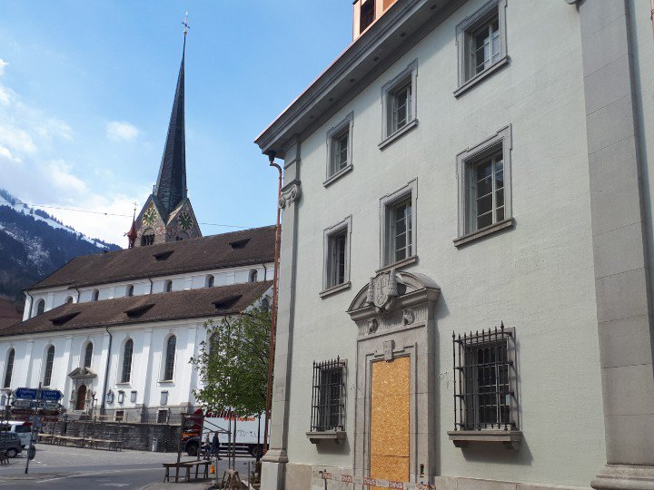
(Originally on Twitter: Tue Apr 09 11:06:35 +0000 2019)
#swisstour 23/26: Regierungsgebäude Zug, Kanton Zug
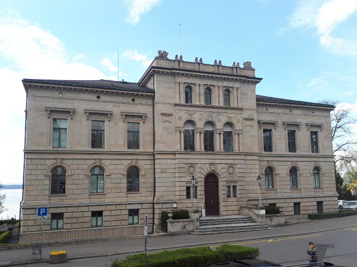
(Originally on Twitter: Tue Apr 09 13:06:37 +0000 2019)
#swisstour 24/26: Rathaus Schwyz, Kanton Schwyz
(Originally on Twitter: Tue Apr 09 14:06:31 +0000 2019)
#swisstour 25/26: Rathaus Altdorf, Kanton Uri
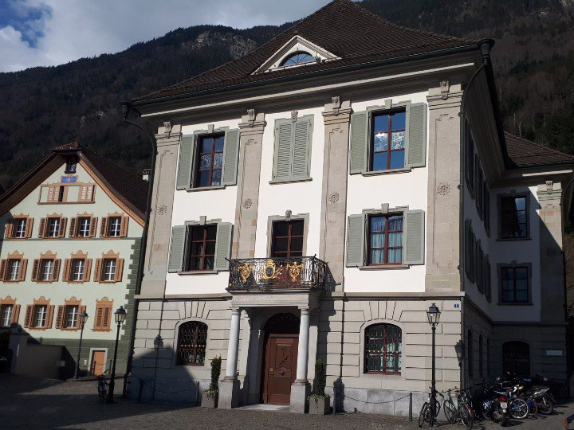
(Originally on Twitter: Tue Apr 09 15:17:28 +0000 2019)
🎉🎉🎉 #swisstour 26/26: Palazzo delle Orsoline Bellinzona, Kanton Tessin 🇨🇭🇨🇭🇨🇭
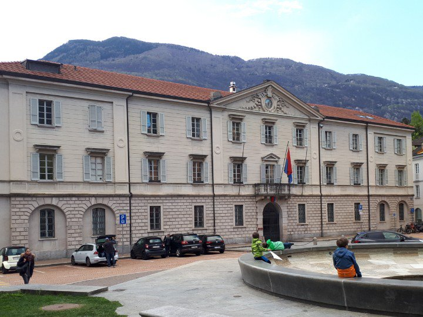
(Originally on Twitter: Tue Apr 09 16:17:17 +0000 2019)